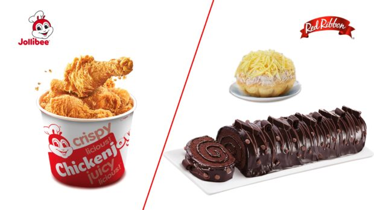

For 45 years, home-grown Jollibee Foods Corporation (JFC) strived to only work with reputable suppliers that share the same passion for food quality, food safety, and go beyond these to extend themselves towards driving sustainable operations. It is no surprise then that San Miguel Foods Incorporated (SMFI) has been a partner to JFC across decades with SMFI supplying fresh, quality poultry products for Jollibee Chickenjoy, and providing other products such as pizza toppings, hams, bacon, butter, cheese and flour for the different restaurant brands of JFC .
As Filipino-owned companies deeply rooted in the value of malasakit or concern for others, both SMFI and JFC work hard every day to nourish and nurture Filipinos by providing food that is fresh, delicious, safe, high in quality, and offer value for money. Both companies are proud in being Filipino-born companies competing in the global arena, being professionally managed, customer-centered, strategic and yet, flexible. Beyond common values, the longstanding cooperation of JFC and SMFI is attributable to strategically aligned goals further strengthened by mutual respect, transparency of business directions and challenges, and commitment to find solutions to address ever-changing consumer demands. Sustainability Both JFC and SMFI's commitment towards improving its impact towards society and environment has been manifested in each company's sustainability architecture. For Jollibee Group, it has made significant strides over its 45-year history in various community and energy saving projects, and is now consolidating all its sustainability efforts into "Joy for Tomorrow," the company's Global Sustainability Agenda. The "Joy for Tomorrow" centers on three pillars-food, people, and the planet. This is a more cohesive framework that unites the Jollibee Group community, including employees, business partners, suppliers, vendors, and other stakeholders, toward a set of shared sustainability goals. On SMFI's end, its sustainability agenda focuses on four overarching goals which are to establish a circular economy approach by 2040, to achieve Net Zero by 2050, to uplift the lives of at least 15 million people by 2030 and have a fully sustainable and ethical supply chain by 2040. To achieve these targets, it has implemented key initiatives that help reduce its impact on the environment and improve the quality of life of Filipinos. These include repurposing some by-products from its production as raw materials for feeds, installing rainwater harvest systems in its facilities to conserve water, and tapping renewable energy sources such as solar energy and biomass. Outlook As the two companies further extend its collaboration, both remain focused on being customer-centric, from the area of product innovations to market reach expansion. SMFI lauds JFC for prioritizing listening to its consumers and knowing them well, enabling it to develop the most innovative products that directly meet the customer's wants and needs. Hence, it sees JFC not only retaining its market leadership in the Philippines but also continuing its successful expansion to other parts of the world. JFC recognizes the depth and breadth of SMFI's initiatives to instill high standards of quality in its food offerings and new product development and to deliver these with minimal impact to the planet while maximizing its positive effect to communities. It applauds SMFI for exhibiting characteristics of a world-class food producer and counts on it as one of its top suppliers that helps the Jollibee Group fulfill its mission to serve great tasting food that brings joy to everyone.